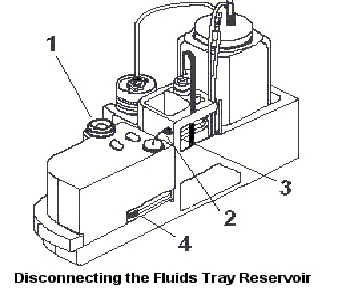

This procedure describes how to rinse the fluids tray wash buffer reservoir.
Perform this procedure when the fluids tray requires rinsing because of contaminated wash buffer, incompatible wash buffer lots, or sediment, deposits, or foreign matter in the reservoir.
Remove the reservoir from the fluids tray.
Figure 74: Disconnecting fluids tray reservoir

1
Unscrew the wash buffer reservoir receptacle.
2
Disconnect the wire from the buffer level sensor.
3
Grip the tubing and luer fitting.
4
Press the quick release tab on the reservoir output tube fitting.
Lift the wash buffer bottle from the external fluids tray reservoir.
Slide the front of the fluids tray away from the instrument to allow access to the fluid connection.
Unscrew the wash buffer reservoir receptacle ¼ turn counterclockwise and lift it out of the reservoir. Keep the actuator rod in place inside the receptacle throughout this procedure.
Using the access hole in the tray tower, disconnect the wire from the buffer level sensor to the wiring harness. Push the sensor connector through the black strain-relief.
Using the access hole in the tray tower, grip the tubing and Luer fitting and rotate them ¾ turn counterclockwise. Remove the tubing and fitting, and place them aside.
Press the quick release tab on the reservoir output tube fitting, then pull the fitting and tubing away from the reservoir.
Empty, rinse, reinstall, and refill the fluids tray reservoir.
Carefully lift the reservoir from the tray without spilling the buffer and pour the reservoir contents into a sink.
Fill the reservoir ¾ full with distilled or deionized water. Gently swirl the reservoir for a few seconds, and then pour the reservoir contents into a sink.
Repeat the reservoir rinse step four times. Allow the final pour to empty thoroughly into the sink.
Note: If contamination is suspected, also rinse the fluids tray valve receptacle with deionized water.
Place the reservoir onto the fluids tray.
Reconnect the reservoir by reversing the reservoir removal steps.
Caution: After connecting the Luer fitting and tubing, route the tubing upward into the harness clamp to prevent a siphon effect if the reservoir overfills.
Place the valve assembly onto a new bottle of wash buffer and place the bottle onto the reservoir.
Perform 12 pipettor priming cycles.
Perform eight wash probe priming cycles.
Verify operation of the instrument after rinsing the reservoir.
Perform a System Check and confirm that all specifications are acceptable.